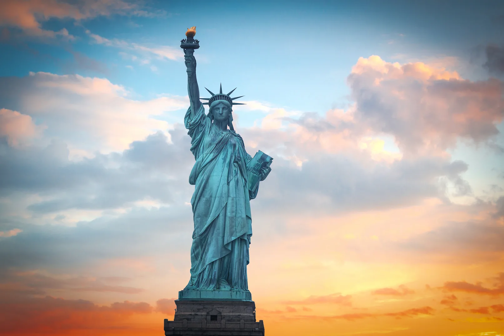
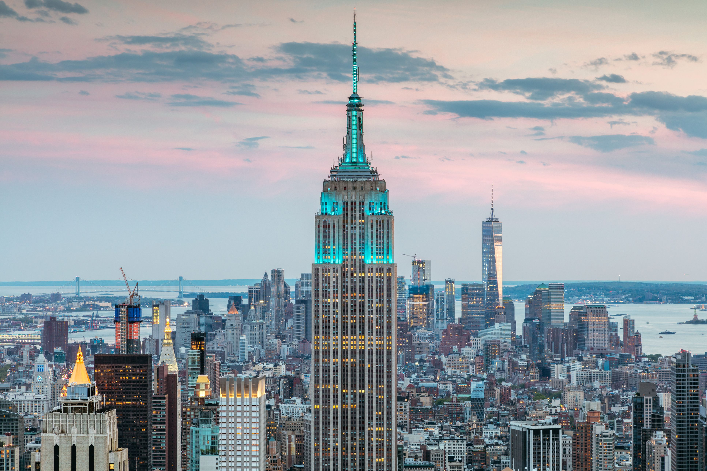
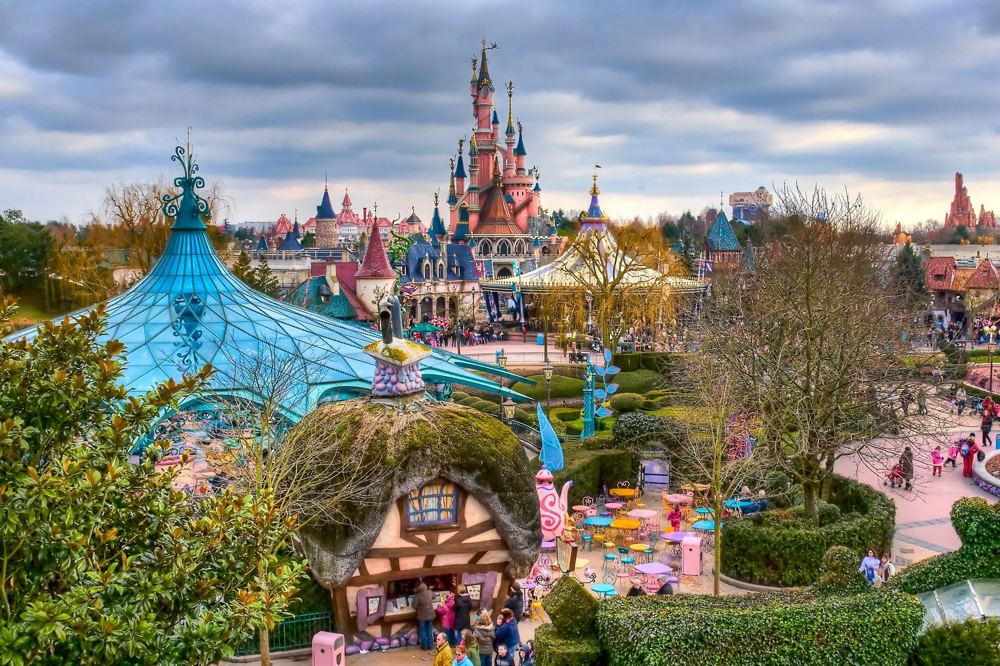
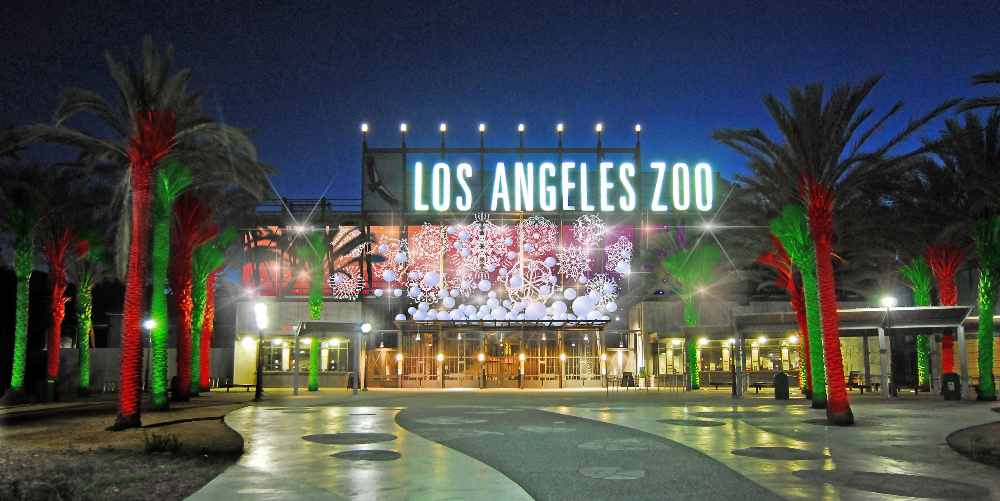
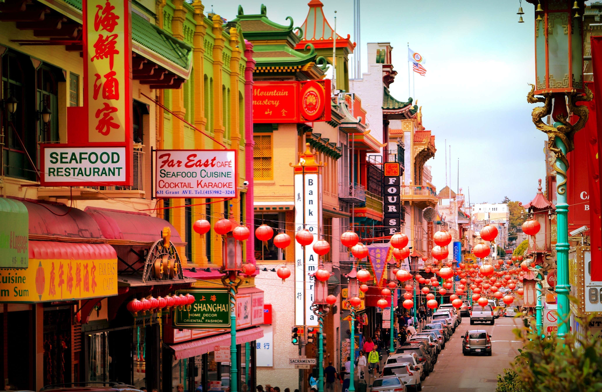

США
Оригинальные обычаи и правила в Америке
- На Пасху принято катать яйца на лужайке перед Белым домом. В день праздника на газоне собираются тысячи людей. Все жители общаются, участвуют в смешных конкурсах и катают большими ложками вареные яйца.
- Американцы не снимают обувь, когда приходят в гости. Если гость вдруг начнет разуваться, то хозяева дома удивятся и посчитают его странным.
- В Америке принято везде оставлять чаевые. Это правило вежливого тона. Зато платить в ресторане будет каждый сам за себя, даже если вас пригласили на ужин.
- В России принято, что если именинник зовёт гостей на день рождения в кафе или ресторан, то он и оплачивает ужин. В Америке наоборот — гости угощают хозяина вечера.
Это далеко не все оригинальные традиции, которые есть в Америке. В каждом штате действуют свои обычаи и законы, причем часто они противоположны друг другу. Ознакомиться со всеми ими невозможно, даже коренные жители США не в курсе всех традиций, которые существуют в большой многонациональной стране.
Особенности национальной кухни
В Америке произошло смешение кухонь разных стран мира, поэтому на одном столе можно наблюдать итальянскую пасту, борщ и японские суши. Американцы — большие фанаты всевозможных закусочных и ресторанов быстрого питания. Если им не хочется идти на ужин в кафе или ресторан, то они заказывают еду на дом, отдавая предпочтение пиццериям или мексиканской кухне. Во время трапезы в Америке принято общаться, вести непринужденную светскую беседу или делиться последними новостями. Молча здесь не едят.
Туристические города
К популярным туристическим городам можно отнести следующие:
- Нью-Йорк — статуя Свободы, Эмпайр-стейт-билдинг и др.
- Майами — шикарная погода и шикарные пляжи
- Лос-Анджелес — Диснейленд, Зоопарк
- Лас-Вегас — город развлечений и азарта
- Голливуд — мировой центр киноиндустрии
- Сан-Франциско — мост "Золотые ворота", Китай-город
Статуя свободы, Нью-Йорк
Эмпайр-стейт-билдинг, Нью-Дели
Диснейленд, Лос-Анджелес
Зоопарк, Лос-Анджелес
Китай-город, Сан-Франциско
